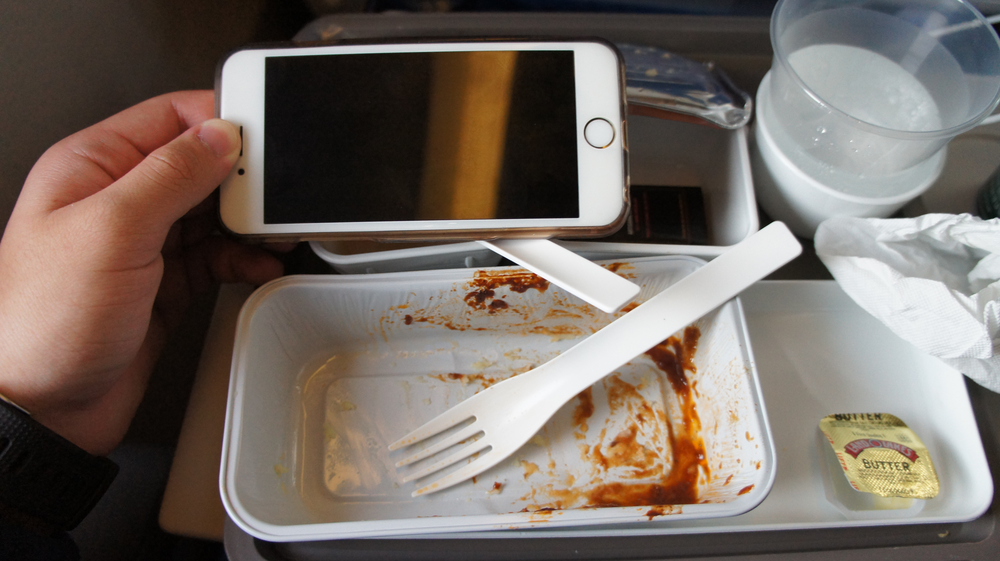
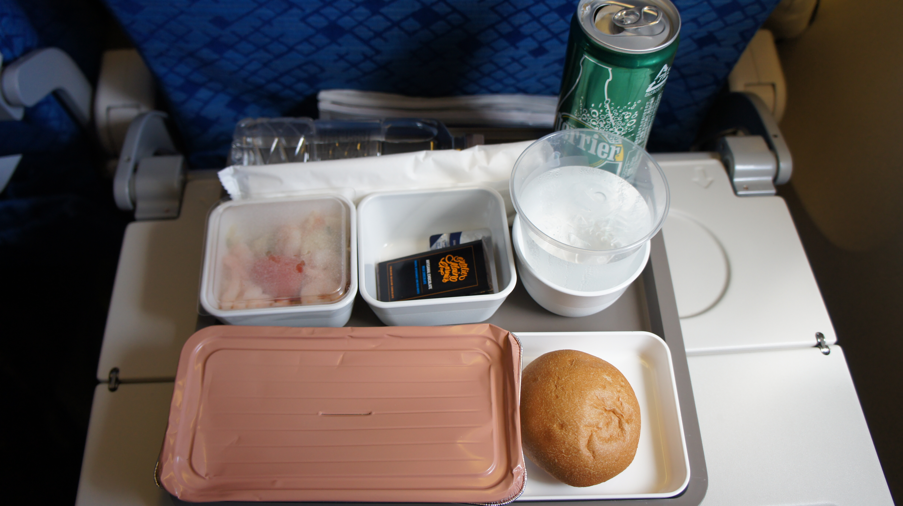
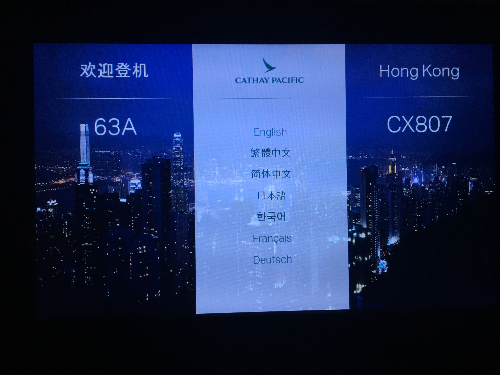

Cathay Pacific Boeing 777-300ER Chicago to Hong Kong and Back
Last time, I started in Terminal 1. This time… Terminal 5. I’ve arrived at Terminal 5 before, but not departed from it. It doesn’t have TSA Precheck, but it was rather quiet… if you went to the right place.
 B-KPA (Cathay Pacific’s first Boeing 777-300ER) flew me Chicago to Hong Kong. I much prefer the old livery and was glad to see this plane retained it. It was involved in a catering truck accident in Zurich four years ago.
B-KPA (Cathay Pacific’s first Boeing 777-300ER) flew me Chicago to Hong Kong. I much prefer the old livery and was glad to see this plane retained it. It was involved in a catering truck accident in Zurich four years ago.
I got B-KPU on the flight from Hong Kong to Chicago. It was painted in the new livery, but that was quite the contrast!
How do I feel about the new livery? Look at the last two letters of the registration.
 Boarding in both directions felt a little chaotic, but I guess it was efficient? Interestingly it was more orderly ex-ORD.
Boarding in both directions felt a little chaotic, but I guess it was efficient? Interestingly it was more orderly ex-ORD.
Here’s pictures of the forward economy cabin.
Which feels a little bit on the older side!
It did feel quite large. But the configuration makes it so (9-abreast 3x3x3 compared to the 10-abreast 3x4x3 many carriers use, and which CX will reconfigure their 777s into).
 Here’s the rear economy cabin, where I sat for the flights.
Here’s the rear economy cabin, where I sat for the flights.
The pitch was 32”, and the width was 18.5”, all to the accuracy of my measuring tape.
Overhead panels… not really so good with no air vents, but the flight was in the winter. I imagine it would be a different story on a hot summer day, or near the equator in Asia.
Here’s the view from the back.
On both directions, a menu was passed out. Here’s the menu ex-ORD. The back side is in Cantonese.
I started with a Coke Zero (they don’t have Diet Coke) to drink, which was served with peanuts.
Meal was served on a rather large tray. I had a Perrier to go with it.
 Here’s the pasta option.
Here’s the pasta option.
 Here’s the chicken and rice.
Here’s the chicken and rice.
 Here’s my selection, which was mashed potatoes with beef.
The size is rather good, too! So was the meal. I enjoyed the turkey coleslaw salad. Seatmates reported the other selections good.
Ice cream bars for dessert.
Which were kind of hard, but I enjoyed it!
I had a tea before bed.
Here’s the second meal, served mid-flight.
The shrimp fried rice option. Seatmates reported it good.
 The orzo with chicken option.
The orzo with chicken option.
And fresh fruit was served! I also enjoyed the Chocolate Mousse, but I have a sweet tooth!
Here’s the menu, ex-HKG.
I started with another coke but didn’t get the can this time.
 The tray was identical, and I had to ask for the full can.
Here’s the chicken and rice option.
Here’s my selection, the mashed potatoes and beef.
A shrimp salad was served with it.
Ice cream for dessert, we got Movenpick chocolate ice cream.
Again, hard as a rock.
The second meal was served mid-flight.
Kind of cheap plastic spoon for what?
Here’s the potatoes and chicken option.
Here’s the fish and rice.
The custard… with a layer of water. Eww… it was bland too.
If, ex-HKG, I were to pick my favorite meal, you’d be surprised to see me pick the “instant noodles” that were “available upon request” because, honestly, the rest were eww.
Which was a little disappointment for CX’s catering in-house. I guessed that catering ex-ORD was outsourced based on this Do & Co truck I saw. By the way, Do & Co is a very good brand.
 On the flight to Hong Kong on B-KPA, the newer entertainment system was used. It was quite fast.
It had the nose camera.
 The entertainment screen was easy to use.
The entertainment screen was easy to use.
It had a decent moving map too.
 With 3D views.
With 3D views.
 Travel information is also provided on the IFE.
Travel information is also provided on the IFE.
B-KPA, despite having the older paint, had been installed with Wi-Fi. Though the flight time was not synced together.
The screenshots were from my iPhone. The internet plans seemed reasonable for the second option, although it was quite steep for the hour pass.
Coverage was quite good, and yes, it seemed to include Mainland China.
Nearing arrival, connecting flight information was available for display. HKG is a major transit point in Asia.
Meanwhile, I wasn’t connecting, so I found airport information.
 On B-KPU, the seats had the older IFE system.
On B-KPU, the seats had the older IFE system.
But still had the nose camera.
Extremely cheap headphones were provided, and I didn’t find it useful.
A “snack bar” was set in the galley mid-flight.
This flight was a great way to cross the Pacific. I liked the wide seats with good legroom, the food was a mixed bag, though. Not too different than flying with United.